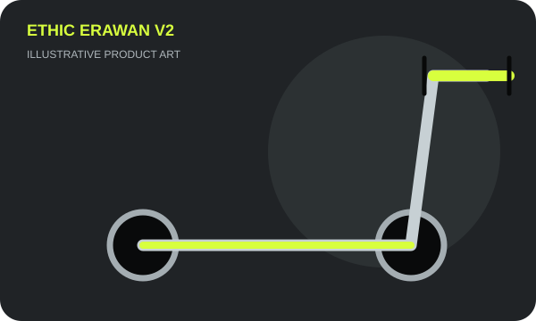
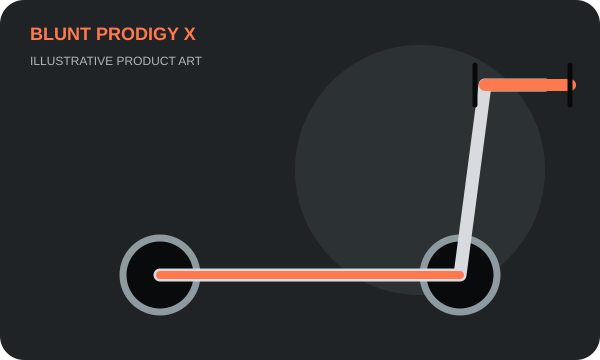
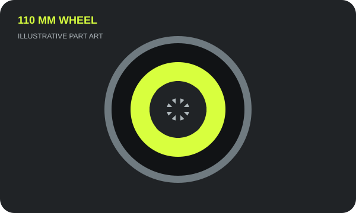
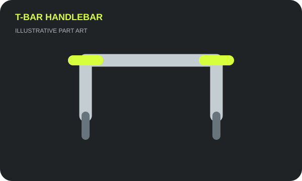
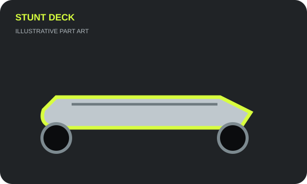
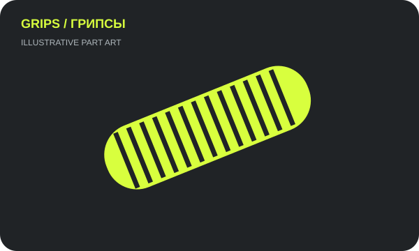

ПопулярноеСамокат
Самокат ETHIC Erawan V2
Лёгкая парковая модель. Размер и цвет уточняйте перед заказом.
21 000 ₽ориентир, уточните наличие
Заказать ↗Самокаты и комплектующие. Нажми «Заказать», чтобы перейти на Avito Вопросы пиши в максе тг или ватсап 89284017057.

ПопулярноеЛёгкая парковая модель. Размер и цвет уточняйте перед заказом.

Для прогрессаУниверсальный вариант для парка и уверенного катания.

ЗапчастиКолесо для трюкового самоката. Совместимость зависит от вилки и деки.

ЗапчастиПрямой руль. Перед заказом уточните высоту, ширину и стандарт компрессии.

ЗапчастиДека подбирается по ширине, длине и совместимости с колесом.

НедорогоПара мягких грипс. Цвета уточняйте при заказе.
Ориентиры по моделям сверялись с публичными каталогами магазинов: Kickmeat и SimpleBoardShop. Цены могут меняться.